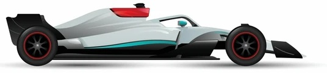

Lewis Carl Davidson Hamilton (n. 7 de enero de 1985 en Stevenage, Hertfordshire, Reino Unido) es un piloto de automovilismo. Hijo de madre británica y padre granadino (de la Isla de Granada, situada en el mar del Caribe). Hamilton debutó en karts a la edad de 8 años. Después de ganar varios campeonatos, firmó un contrato con el equipo de Fórmula 1 McLaren cuando contaba con 12 años. Después corrió en la Fórmula Renault británica.
En 2004 entró en la Fórmula 3 Euroseries, llegando hasta la GP2 Series en 2006, con el equipo ART. Desde 2007 es piloto oficial de la escudería McLaren; compartiendo equipo con Jenson Button, Pedro Martínez de la Rosa y Gary Paffett actualmente. Se proclamó Campeón Mundial de Fórmula 1 en 2008, convirtiendose en el campeón más joven en lograr el título. En su corta carrera en la Fórmula 1 se ha convertido uno de los pilotos más célebres y admirados de la actualidad.
|  |